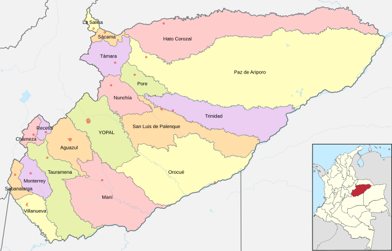

Casanare
Casanare es un departamento colombiano ubicado en la región de los Llanos, conocido por su vasta llanura y biodiversidad. Su economía se basa en la ganadería, la agricultura y la explotación de petróleo. La capital es Yopal, donde se celebra una rica cultura llanera, destacando tradiciones como la música y el joropo. Casanare también alberga paisajes naturales y una mezcla de comunidades indígenas y llaneras

Costumbres
- Tradiciones Llaneras: Los llaneros celebran su herencia cultural a través de la música, la danza y el vestuario típico, como los sombreros vueltiaos.
- Festividades Patronales:Se celebran diversas fiestas en honor a santos, con actividades religiosas, bailes y ferias.
- Festival del Joropo: Este evento resalta la música y danza del joropo, donde artistas locales y nacionales participan, promoviendo la cultura regional.
Comida típica
- Carne a la Llanera: Asados de res que son un símbolo de la cocina local, generalmente cocinados a la parrilla.
- Postres Tradicionales: Incluyen dulces de leche y platos a base de frutas tropicales, reflejando la riqueza agrícola de la región.
- Sancocho: Guiso popular preparado con carne, yuca, plátano y otras verduras, ideal para reuniones familiares.
Actividad económica principal
- Ganadería: La cría de ganado bovino es fundamental, y Casanare es uno de los principales departamentos ganaderos del país.
- Agricultura: Cultivos como yuca, maíz y palma de aceite son esenciales para la economía local y el sustento de muchas familias.
- Explotación de Petróleo: La industria petrolera es una de las principales fuentes de ingreso, generando empleo y desarrollo en la región.
- Ecoturismo: Con paisajes naturales y biodiversidad, se están promoviendo actividades turísticas que atraen visitantes interesados en la naturaleza.
Población
- La población de Casanare es diversa, con una mezcla de habitantes llaneros y comunidades indígenas. Yopal es la capital y centro principal de la región. A lo largo de los años, la población ha crecido debido al desarrollo económico, especialmente en la industria petrolera. Las comunidades son en su mayoría rurales, con un fuerte sentido de identidad cultural.
Atrás